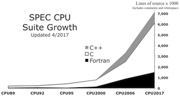
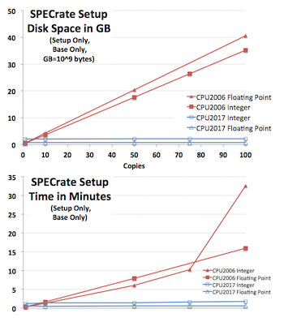

| $Id: overview.html 6356 2019-08-16 18:27:23Z JohnHenning $ | Latest: www.spec.org/cpu2017/Docs/ |
|---|
This document introduces SPEC CPU®2017 via a series of questions and answers. SPEC CPU 2017 is a product of the SPEC® non-profit corporation (about SPEC).
|
Benchmarks: good, bad, difficult, and standard Q1. What is SPEC? Q2. What is a (good) benchmark? Q3. What are some common benchmarking mistakes? Q4. Should I benchmark my own application? Q5. Should I use a standard benchmark? Q6. What does SPEC CPU 2017 measure? Q7. Should I use CPU 2017? Why or why not? Q8. What does SPEC provide? Q9. What must I provide? Q10. What are the basic steps to run CPU 2017? Q11. How long does it take? Is it longer than CPU 2006? Q12. What is a CPU 2017 "suite"? Q13. What are the benchmarks? Q14. Are 5nn.benchmark and 6nn.benchmark different? Q15. What are "SPECspeed" and "SPECrate" metrics? Q16. What are "base" and "peak" metrics? Q17. Which SPEC CPU 2017 metric should I use? Q18: What is a "reference machine"? Why use one? |
Q19. What's new in SPEC CPU 2017? a. Primary content 1. Benchmarks and Metrics 2. Source Code: C99, Fortran-2003, C++2003 3. Rules b. Power c. Documentation d. Tools 1. SPECrate smarter setup 2. sysinfo is required 3. Compiler versions are required 4. Image Validation 5. Usability 6. Removed items Q20: Where can I find SPEC CPU 2017 results? Q21: Can I publish elsewhere? Do the rules still apply? Q22: What will happen to SPEC CPU 2006? Q23: Can I convert CPU 2006 results to CPU 2017? SPEC CPU 2017 Benchmark Selection Q24: What criteria were used? Q25: Were some benchmarks 'kept' from CPU 2006? Q26. Are the benchmarks comparable to other programs? Q27: Can I run the benchmarks manually? Q28. How do I contact SPEC? Q29. What should I do next? |
SPEC is the Standard Performance Evaluation Corporation, a non-profit organization founded in 1988 to establish standardized performance benchmarks that are objective, meaningful, clearly defined, and readily available. SPEC members include hardware and software vendors, universities, and researchers. [About SPEC]
SPEC was founded on the realization that "An ounce of honest data is worth a pound of marketing hype".
A surveyor's bench mark (two words) defines a known reference point by which other locations
may be measured.
A computer benchmark performs a known set of operations by which computer performance can be
measured.
| Table 1: Characteristics of useful performance benchmarks | |
| Specifies a workload | A strictly-defined set of operations to be performed. |
| Produces at least one metric | A numeric representation of performance. Common metrics include:
|
| Is reproducible | If repeated, will report similar (*) metrics. |
| Is portable | Can be run on a variety of interesting systems. |
| Is comparable | If the metric is reported for multiple systems, the values are meaningful and useful. |
| Checks for correct operation | Verify that meaningful output is generated and that the work is actually done. "I can make it run as
fast as you like if you remove the constraint of getting correct answers." (**) |
| Has run rules | A clear definition of required and forbidden hardware, software, optimization, tuning, and procedures. |
|
(*) "Similar" performance will depend on context. The benchmark should include guidelines as to what variation one should expect if the benchmark is run multiple times. (**) Author unknown. If you know who said it first, write. |
|
Creating high-quality benchmarks takes time and effort. There are some difficulties that need to be avoided.
The difficulties listed in the table are based on real examples, and the solutions are what SPEC CPU tries to
do about them.
| If the benchmark description says: | There may be potential difficulties: | Solutions | |
|---|---|---|---|
1. It runs Loop 1 billion times. |
Compiler X runs 1 billion times faster than Compiler Y, because compilers are allowed to skip work that has no effect on program outputs ("dead code elimination"). | Benchmarks should print something. | |
2. Answers are printed, but not checked, because Minor Floating Point Differences are expected. |
|
Answers should be validated, within some sort of tolerance. | |
3. The benchmark is already compiled.
|
You may want to compare new hardware, new operating systems, new compilers. | Source code benchmarks allow a broader range of systems to be tested. | |
4. The benchmark is portable.
|
You may want to compare other compilers and other operating systems. | Test across multiple compilers and OS versions prior to release. | |
5. The benchmark measures X. |
Has this been checked?
If not, measurements may be dominated by benchmark setup time, rather than the intended operations. |
Analyze profile data prior to release, verify what it measures. | |
6. The benchmark is a slightly modified version of Well Known Benchmark. |
|
Someone should check.
Create a process to do so. |
|
7. The benchmark does not have a Run Rules document, because it is obvious how to run it correctly. |
Although "obvious" now, questions may come up.
A change that seems innocent to one person may surprise another. |
Explicit rules improve the likelihood that results can be meaningfully compared. | |
8. The benchmark is a collection of low-level operations representing X. |
How do you know that it is representative? | Prefer benchmarks that are derived from real applications. | |
Yes, if you can; but it may be be difficult.
Ideally, the best comparison test for systems would be your own application with your own workload. Unfortunately, it is often impractical to get a wide set of comparable system measurements using your own application with your own workload. For example, it may be difficult to extract the application sections that you want to benchmark, or too difficult to remove confidential information from data sets.
It takes time and effort to create a good benchmark, and it is easy to fall into common mistakes.
Maybe. A standardized benchmarks may provide a reference point, if you use it carefully.
You may find that a standardized benchmark has already been run on systems that you are interested in. Ideally, that benchmark will provide all the characteristics of Table 1 while avoiding common benchmark mistakes.
Before you consider the results of a standardized benchmark, you should consider whether it measures things that are important to your own application characteristics and computing needs. For example, a benchmark that emphasizes CPU performance will have limited usefulness if your primary concern is network throughput.
A standardized benchmark can serve as a useful reference point, but SPEC does not claim that any standardized benchmark can replace benchmarking your own actual application when you are selecting vendors or products.
SPEC CPU 2017 focuses on compute intensive performance, which means these benchmarks emphasize the performance of:
SPEC CPU 2017 intentionally depends on all three of the above - not just the processor.
SPEC CPU 2017 is not intended to stress other computer components such as networking, graphics, Java libraries, or the I/O system. Note that there are other SPEC benchmarks that focus on those areas.
SPEC CPU 2017 provides a comparative measure of integer and/or floating point compute intensive performance. If this matches with the type of workloads you are interested in, SPEC CPU 2017 provides a good reference point.
Other advantages to using SPEC CPU 2017 include:
Limitations of SPEC CPU 2017: As described above, the ideal benchmark for vendor or product selection would be your own workload on your own application. Please bear in mind that no standardized benchmark can provide a perfect model of the realities of your particular system and user community.
SPEC CPU 2017 is distributed as an ISO image that contains:
The documentation is also available at www.spec.org/cpu2017/Docs/index.html, including the Unix and Windows installation guides.
Briefly, you will need a computer running Linux, Mac OS X, Unix, or Microsoft Windows with:
The above is only an abbreviated summary. See detail in the System Requirements document.
New with CPU 2017, the integer suites include a Fortran benchmark.
Reportable runs for all suites require compilation of all three languages (C, C++, Fortran).
A one-page summary is in SPEC CPU 2017 Quick Start. Here is a summary of the summary:
Run time depends on the system, suite, compiler, tuning, and how many copies or threads are chosen.
One example system is shown below; your times will differ.
| Example run times - simple options chosen | |||
| Metric | Config Tested | Individual Benchmarks |
Full Run (Reportable) |
| SPECrate 2017 Integer | 1 copy | 6 to 10 minutes | 2.5 hours |
| SPECrate 2017 Floating Point | 1 copy | 5 to 36 minutes | 4.8 hours |
| SPECspeed 2017 Integer | 4 threads | 6 to 15 minutes | 3.1 hours |
| SPECspeed 2017 Floating Point | 16 threads | 6 to 75 minutes | 4.7 hours |
| One arbitrary example using a year 2016 system. Your system will differ.
2 iterations chosen, base only, no peak. Does not include compile time. |
|||
Does CPU 2017 take longer than CPU 2006?
| More complicated example: *both* base+peak, 64 copies, 3 iterations | |||
| Metric | Config Tested | Full Run CPU 2006 |
Full Run CPU 2017 |
| SPECrate Integer | 64 copies | 11.1 hours | 11.2 hours |
| SPECrate Floating Point | 64 copies | 16.8 hours | 20.6 hours |
| SPECspeed Integer | 32 threads | 5.0 hours | 6.0 hours |
| SPECspeed Floating Point | 32 threads | 4.3 hours | 2.5 hours |
| One arbitrary example using a year 2017 system. Your system will differ.
3 iterations chosen, base and peak. Does not include compile time. |
|||
Another example is discussed in the FAQ
A suite is a set of benchmarks that are run as a group to produce one of the overall metrics.
SPEC CPU 2017 includes four suites that focus on different types of compute intensive performance:
| Short Tag |
Suite | Contents | Metrics | How many copies? What do Higher Scores Mean? |
| intspeed | SPECspeed®2017 Integer | 10 integer benchmarks | SPECspeed2017_int_base SPECspeed2017_int_peak |
SPECspeed suites always run one copy of each benchmark.
Higher scores indicate that less time is needed. |
| fpspeed | SPECspeed®2017 Floating Point | 10 floating point benchmarks | SPECspeed2017_fp_base SPECspeed2017_fp_peak |
|
| intrate | SPECrate®2017 Integer | 10 integer benchmarks | SPECrate2017_int_base SPECrate2017_int_peak |
SPECrate suites run multiple concurrent copies of
each benchmark.
The tester selects how many. Higher scores indicate more throughput (work per unit of time). |
| fprate | SPECrate®2017 Floating Point | 13 floating point benchmarks | SPECrate2017_fp_base SPECrate2017_fp_peak |
|
|
The "Short Tag" is the canonical abbreviation for use with runcpu, where context
is defined by the tools. In a published document, context may not be clear.
To avoid ambiguity in published documents, the Suite Name or the Metrics should be spelled as shown above. |
||||
SPEC CPU 2017 has 43 benchmarks, organized into 4 suites:
| SPECrate®2017 Integer |
SPECspeed®2017 Integer |
Language[1] | KLOC[2] | Application Area |
|---|---|---|---|---|
| 500.perlbench_r | 600.perlbench_s | C | 362 | Perl interpreter |
| 502.gcc_r | 602.gcc_s | C | 1,304 | GNU C compiler |
| 505.mcf_r | 605.mcf_s | C | 3 | Route planning |
| 520.omnetpp_r | 620.omnetpp_s | C++ | 134 | Discrete Event simulation - computer network |
| 523.xalancbmk_r | 623.xalancbmk_s | C++ | 520 | XML to HTML conversion via XSLT |
| 525.x264_r | 625.x264_s | C | 96 | Video compression |
| 531.deepsjeng_r | 631.deepsjeng_s | C++ | 10 | Artificial Intelligence: alpha-beta tree search (Chess) |
| 541.leela_r | 641.leela_s | C++ | 21 | Artificial Intelligence: Monte Carlo tree search (Go) |
| 548.exchange2_r | 648.exchange2_s | Fortran | 1 | Artificial Intelligence: recursive solution generator (Sudoku) |
| 557.xz_r | 657.xz_s | C | 33 | General data compression |
| SPECrate®2017 Floating Point |
SPECspeed®2017 Floating Point |
Language[1] | KLOC[2] | Application Area |
| 503.bwaves_r | 603.bwaves_s | Fortran | 1 | Explosion modeling |
| 507.cactuBSSN_r | 607.cactuBSSN_s | C++, C, Fortran | 257 | Physics: relativity |
| 508.namd_r | C++ | 8 | Molecular dynamics | |
| 510.parest_r | C++ | 427 | Biomedical imaging: optical tomography with finite elements | |
| 511.povray_r | C++, C | 170 | Ray tracing | |
| 519.lbm_r | 619.lbm_s | C | 1 | Fluid dynamics |
| 521.wrf_r | 621.wrf_s | Fortran, C | 991 | Weather forecasting |
| 526.blender_r | C++, C | 1,577 | 3D rendering and animation | |
| 527.cam4_r | 627.cam4_s | Fortran, C | 407 | Atmosphere modeling |
| 628.pop2_s | Fortran, C | 338 | Wide-scale ocean modeling (climate level) | |
| 538.imagick_r | 638.imagick_s | C | 259 | Image manipulation |
| 544.nab_r | 644.nab_s | C | 24 | Molecular dynamics |
| 549.fotonik3d_r | 649.fotonik3d_s | Fortran | 14 | Computational Electromagnetics |
| 554.roms_r | 654.roms_s | Fortran | 210 | Regional ocean modeling |
| [1] For multi-language benchmarks, the first one listed determines library and link options (details) | ||||
| [2] KLOC = line count (including comments/whitespace) for source files used in a build / 1000 | ||||
Most of the benchmarks in the table above are part of a pair:
5nn.benchmark_r for the SPECrate version 6nn.benchmark_s for the SPECspeed version
Benchmarks within a pair are similar to each other.
Briefly, differences include: workload sizes; compile flags; and run rules.
See:
[memory]
[OpenMP]
[rules]
More detail:
Memory Usage, -m32 and -m64
Although the names are similar, the workloads often differ.
For SPECrate, you may be able to choose between 32-bit or 64-bit compilation (check your compiler
documentation for flags such as -m32 or -m64).
For SPECspeed, you will usually need 64 bits (-m64).
OpenMP directives: never for SPECrate
OpenMP directives are always suppressed (not visible to the compiler)
when building the SPECrate benchmarks.
OpenMP directives: optional for SPECspeed
OpenMP directives are optionally available for all SPECspeed 2017 Floating Point benchmarks, and for one SPECspeed 2017
Integer benchmark, 657.xz_s.
[OpenMP]
Prohibited flags
For SPECrate, compiler parallelization
is forbidden
-- both OpenMP and compiler autopar.
Other differences
Some pairs enable different source via compile flags (which are automatically provided by the SPEC CPU
toolset). For example, 627.cam4_s includes the flag -DUSE_COSP to enable a different
method of cloud modeling than is used for 527.cam4_r; and the Chess program
deepsjeng is compiled with flags to tell it which size it should use for its primary data structures
(-DSMALL_MEMORY or -DBIG_MEMORY).
There are many ways to measure computer performance. Among the most common are:
SPECspeed is a time-based metric; SPECrate is a throughput metric.
| Calculating SPECspeed® Metrics | Calculating SPECrate® Metrics |
|---|---|
| 1 copy of each benchmark in a suite is run. | The tester chooses how many concurrent copies to run |
| The tester may choose how many OpenMP threads to use. | OpenMP is disabled. |
For each benchmark, a performance ratio is calculated as: time on a reference machine / time on the SUT |
For each benchmark, a performance ratio is calculated as: number of copies * (time on a reference machine / time on the SUT) |
| Higher scores mean that less time is needed. | Higher scores mean that more work is done per unit of time. |
Example:
|
Example:
|
For both SPECspeed and SPECrate, in
order to provide some assurance that results are repeatable, the entire process is repeated.
|
|
|
For both SPECspeed and SPECrate, the selected ratios are averaged using the Geometric Mean, which is reported as the overall metric. |
|
For the energy metrics, the calculations are done the same way, using energy instead of time in the above formulas.
The reference times and reference energy may be found in the observations posted with www.spec.org/cpu2017/results/
If you would like more than 3 digits for the reference values, see the CSV versions:
SPEC CPU benchmarks are distributed as source code, and must be compiled, which leads to the question:
How should they be compiled? There are many possibilities, ranging from
--debug --no-optimize
at a low end through highly customized optimization and even source code re-writing at a high end. Any point chosen from that range might seem arbitrary to those whose interests lie at a different point. Nevertheless, choices must be made.
For CPU 2017, SPEC has chosen to allow two points in the range. The first may be of more interest to those who prefer a relatively simple build process; the second may be of more interest to those who are willing to invest more effort in order to achieve better performance.
The base metrics (such as SPECspeed2017_int_base) require that all modules of a given language in a suite must be compiled using the same flags, in the same order. All reported results must include the base metric.
The optional peak metrics (such as SPECspeed2017_int_peak) allow greater flexibility. Different compiler options may be used for each benchmark, and feedback-directed optimization is allowed.
Options allowed under the base rules are a subset of those allowed under the peak rules. A legal base result is also legal under the peak rules but a legal peak result is NOT necessarily legal under the base rules.
For more information, see the SPEC CPU 2017 Run and Reporting Rules.
It depends on your needs; you get to choose, depending on how you use computers, and these choices will
differ from person to person.
Examples:
SPEC uses a reference machine to normalize the performance metrics used in the CPU 2017 suites. Each benchmark is run and measured on this machine to establish a reference time for that benchmark. These times are then used in the SPEC calculations.
The reference machine is a historical Sun Microsystems server, the Sun Fire V490 with 2100 MHz UltraSPARC-IV+ chips. The UltraSPARC-IV+ was introduced in 2006, and is newer than the chip used in the CPU 2000 and CPU 2006 reference machines (the 300 MHz 1997 UltraSPARC II).
Sidebar: You may be tempted to look up the CPU 2006 score for the CPU 2017 reference machine, and from that try to convert CPU 2006 scores to CPU 2017 scores. There are two problems with such an attempt. (1) Its score of 78.8 was from a different usage scenario: 8 copies, 8 cores, 4 chips; vs. the reference scenario of 1 copy, 1 core, 1 chip; and (2) In general scores across suites cannot be converted.)
Note that when comparing any two systems measured with the CPU 2017, their performance relative to each other would remain the same even if a different reference machine was used. This is a consequence of the mathematics involved in calculating the individual and overall (geometric mean) metrics.
Compared to SPEC CPU 2006, what's new in SPEC CPU 2017?
As mentioned elsewhere in this document:
|
Total source code has increased, as shown in the graph [larger version], because most benchmarks are derived from real applications (including various open source projects). During benchmark development, SPEC spends substantial effort working to improve portability, using language standards to assist in the process. For CPU 2017, the standards referenced were C99, Fortran-2003, and C++2003. Caution: The benchmarks do not comply perfectly with ISO/ANSI lanaguage standards, because their source code is derived from real applications. The rules allow optimizers to assume standards *only* where that does not prevent validation. |
 |
SPEC CPU 2017 includes the ability to optionally measure and report power, including maximum power (W), average power (W), and total energy used (kJ).
Power measurement and reporting for CPU 2017 is optional: Testers are not required to measure power.
If you wish to measure power, you will need:
Metrics: Details of the calculation of the energy metrics can be found here.
New with SPEC CPU 2017 v1.1, the energy metrics are no longer labelled "experimental".
They are fully supported and comparable.
For more information, see the config file documentation on Power Measurement.
There is now a 1-page Quick Start.
There is a collection of working examples in the top-level config directory, with working flags files.
Most documents have been updated for CPU 2017. A few highlights of note:
Make Variables has a handy table of which variables affect which build steps.
SPEC CPU 2017 Config Files:
Reorganized for clarity.
Examples have been tested, and many of them are on your installed copy of SPEC CPU 2017.
| #memorable
#guessable #topicURLs |
For easier navigation, section URLs of the long document config.html are intended to be easy to memorize or guess.
|
||||||
| #OpenMP | How to enable OpenMP for SPECspeed runs. | ||||||
|---|---|---|---|---|---|---|---|
| #PORTABILITY | Which flags affect portability? | ||||||
| #precedence | How config file sections get combined. | ||||||
| #reportable | Strictly enforce rules. | ||||||
| #usingSubmit | How to send your SPECrate copies where you want them. | ||||||
| #variables | How (and why) to tell the difference between ${variable}, $(variable), %{variable} | ||||||
1. SPECrate smarter setupAs systems become larger, and as chips, cores, and hardware threads become smaller, SPECrate runs are asked to handle many more files. For SPEC CPU 2006, runs with hundreds of copies would take hours to set up, requiring around 750 MB (million bytes, 10^6) of disk space for each additional copy after the first copy (setup only, prior to actually running benchmarks; base only; set up both integer and floating point). For SPEC CPU 2017, setup typically takes a few minutes, and each additional copy after the first requires about 200 KB (kilobytes, 10^3). An example system doing SPECrate setup to a single spinning hard drive is shown in the graphs on the right [larger version]. The additional space and time needed per copy for SPEC CPU 2017 is so small as to be barely visible (bottom two lines, in blue). Of course, IO rates are subject to substantial variability according to operating system, file system, and storage type; and may hit "knees in the curve", as in the red line in the bottom graph, for various reasons. This particular test happened to hit a file system cache limit. q. Why is SPECrate 2017 setup faster and smaller? a. All input files are hard linked to the first copy. The concept of hard links (Wikipedia) is commonly supported on modern file systems. Obviously, this optimization only helps benchmark setup, not benchmark output; which is why System Requirements recommends that you allow substantial disk space per copy. q. What if my file system lacks hard links? a. If a SPECrate run is attempted on a file system that does not support hard links, the tools will fall back to the old method, making multiple copies. To check whether this happens, search the log for a message of the form: NOTICE: Linking file from srcdir failed ...[additional text]... Switching to copy mode. If you set verbose or --verbose to 10 or higher, the NOTICE will appear on your screen. |
 |
For SPEC CPU 2017, results that are used in public must use sysinfo, which creates a contemporaneous record of the system under test (automatically, and therefore not subject to human transcription error). [details]
SPEC CPU performance depends on compilers. For CPU 2017, all config files must include:
CC_VERSION_OPTION = (switch that causes version to be printed) CXX VERSION_OPTION = " " " " " " " FC_VERSION_OPTION = " " " " " " "
Builds will fail until you add the above to your config file.
Your installed copy of SPEC CPU 2017 includes Example config files that demonstrate what to include for a
variety of compilers. [detail]
Several benchmarks in CPU 2017 generate images. In order to determine whether acceptable images are generated, SPEC CPU 2017 validates the output using the Structured SIMilarity method, producing an Average Similarity (AVG SSIM). The image validator is described in SPEC CPU 2017 Utilities.
|
Are both of these 'correct'? Sometimes the answer is obvious. AVG SSIM=0.661 |
Sometimes, it's a little harder to decide AVG SSIM=0.998 |
Environment - It is easier to get things in and out of the enviornment now.
You can access environment
variables using ENV macros.
You can set the environment for the
full run using preenv.
You can set the environment for a single
benchmark (in peak only) using envvars.
OMP_NUM_THREADS is set automatically from your --threads or threads.
Command line wins - The former interaction of command line and config file was deemed too confusing. For CPU 2017, if an option can be specified both in a config file and on the runcpu command line (example: copies or --copies), the command line always takes precedence.
Header section - The header section allows you to set many general options for the run (examples: number of iterations, whether to measure power, where to email results). For previous suites, all such settings had to be at the top of the config file, which was sometimes inconvenient (e.g. when including files). For CPU 2017, you can return to the header section at any time, using the section named
default:
or, equivalently,
default=default=default:
Easier-to-navigate reference document - config.html tries to provide #memorable #topicURLs.
Macros can be dumped and less scary info messages can be printed.
Synonyms
Results for measurements submitted to SPEC are available at https://www.spec.org/cpu2017/results/.
Yes, SPEC CPU 2017 results can be published independently, and Yes, the rules still apply.
Although you are allowed to publish indpendently, SPEC encourages results to be submitted for publication on SPEC's web site, because it ensures a peer review process and uniform presentation of all results.
The Fair Use rule recognizes that Academic and Research usage of the benchmarks may be less formal; the key requirement is that non-compliant numbers must be clearly distinguished from rule-compliant results.
SPEC CPU results may be estimated. Estimates must be clearly marked.
Three months after the announcement of CPU 2017, SPEC will require all CPU 2006 results submitted for publication on SPEC's web site to be accompanied by CPU 2017 results. Six months after announcement, SPEC will stop accepting CPU 2006 results for publication on its web site.
After that point, you may continue to use SPEC CPU 2006. You may publish new CPU 2006 results only if you plainly disclose the retirement (the link includes sample disclosure language).
There is no formula for converting CPU 2006 results to CPU 2017 results and vice versa; they are different products. There probably will be some correlation between CPU 2006 and CPU 2017 results (that is, machines with higher CPU 2006 results often will have higher CPU 2017 results), but the correlation will be far from perfect, because of differences in code, data sets, hardware stressed, metric calculations, and run rules.
SPEC encourages SPEC licensees to publish CPU 2017 numbers on older platforms to provide a historical perspective on performance.
SPEC considered:
Although some of the benchmarks from CPU 2006 are included in CPU 2017, they have been given different workloads and/or modified to use newer versions of the source code. Therefore, for example, the CPU 2017 benchmark 505.mcf_r may perform differently than the CPU 2006 benchmark 429.mcf.
Some benchmarks were not retained because it was not possible to update the source or workload. Others were left out because SPEC felt that they did not add significant performance information compared to the other benchmarks under consideration.
Many of the SPEC CPU 2017 benchmarks have been derived from publicly available application programs. The individual benchmarks in this suite may be similar, but are NOT identical to benchmarks or programs with similar names which may be available from sources other than SPEC. In particular, SPEC has invested significant effort to improve portability and to minimize hardware dependencies, to avoid unfairly favoring one hardware platform over another. For this reason, the application programs in this distribution may perform differently from commercially available versions of the same application.
Therefore, it is not valid to compare SPEC CPU 2017 benchmark results with anything other than other SPEC CPU 2017 benchmark results.
To generate rule-compliant results, an approved toolset must be used. If several attempts at using the SPEC-provided tools are not successful, you should contact SPEC for technical support. SPEC may be able to help you, but this is not always possible -- for example, if you are attempting to build the tools on a platform that is not available to SPEC.
If you just want to work with the benchmarks and do not care to generate publishable results, SPEC provides information about how to do so.
SPEC can be contacted in several ways. For general information, including other means of contacting SPEC, please see SPEC's Web Site at:
General questions can be emailed to:
info@spec.org
CPU 2017 Technical Support Questions can be sent to:
cpu2017support@spec.org
If you don't have SPEC CPU 2017, it is hoped that you will consider ordering it.
If you are ready to get started, please follow one of these two paths:
| I feel impatient. Let me dive in. |
I want a clear and complete explanation | |
|---|---|---|
| Quick Start | Read the System Requirements.
Then follow the Install Guide for Unix or Windows. |
SPEC CPU®2017 Overview / What's New?: Copyright © 2017-2019 Standard Performance Evaluation Corporation (SPEC®)
{kind=link}
{kind=link}
{kind=link}
{kind=link}
{kind=link}
{kind=link}